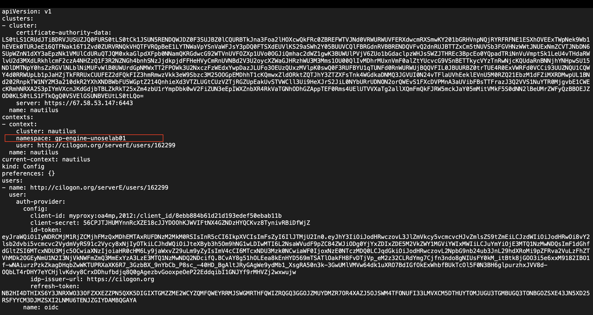

This notebook will help to install and configure kubernetes on your system, you can refer to the video tutorial below
namespace name
Link - https://jupyterhub-west.nrp-nautilus.ioUpload symbol, upload your config file you have downloaded from the NRP portal in your home directory once your jupyter lab instance is launched.
First we will check if the config has been uploaded or placed in the home directory of our Jupyter Environment.
You will see a success message Found config with your config path once your config file is found.
from pathlib import Path
cfg_path = Path.home().resolve() / "config"
if cfg_path.is_file():
print(f"Found config: {cfg_path}")
else:
cfg_dir = input("Enter directory with config: ")
cfg_path = Path(cfg_dir).resolve() / "config"
if cfg_path.is_file():
print(f"Found config: {cfg_path}")
else:
print("ERROR: Re-run this cell and give correct directory")Ensure the output of the previous cell is Found Config: /path/to/config before proceeding.
Copy config file to .kube directory so that kubectl and other kuberentes tool can access and manage our kubernetes cluster configuration.
You will get SUCCESS: Copied config message after file is copied.
from shutil import copy
from pathlib import Path
dest_dir = Path.home().resolve() / ".kube"
dest_dir.mkdir(exist_ok=True)
dest_path = dest_dir / "config"
if dest_path.is_file():
print("SUCCESS: Config correctly configured")
elif cfg_path.is_file() and dest_dir.is_dir():
copy(cfg_path, dest_path)
print("SUCCESS: Copied config")
else:
print("ERROR: Ensure you have correct config path")Install the kubectl in four steps (Ref: https://kubernetes.io/docs/tasks/tools/install-kubectl-linux)
Step I: Download kubectl binary
! curl -LO https://storage.googleapis.com/kubernetes-release/release/$(curl -s https://storage.googleapis.com/kubernetes-release/release/stable.txt)/bin/linux/amd64/kubectlStep II: Make kubectl executable
!chmod +x ./kubectlStep III: Move kubectl to /usr/local/bin to make it global command
!sudo mv ./kubectl /usr/local/bin/kubectlStep IV: Test the kubectl command

!kubectl versionStep IV: You will get the Client version if you able to successfully install kubernetes, now get all the namespaces to test the cluster if it correctly configured

!kubectl get nsInstall K9s tool to visualize the kubernetes resources without entering kubectl commands
(Ref. https://webinstall.dev/k9s/)
Step I: Download script and then pipe it to shell
Step II: Update PATH environment variable
!curl -sS https://webi.sh/k9s | sh!export PATH="$HOME/.local/bin:$PATH"Step III: Update .bashrc file
!source ~/.bashrcStep IV: Launch and test k9s tool

!k9s? : Wildcard Search for namespace: : Search for resources:ns : List all namespaces:pods : List all pods:jobs : List all jobs:svc : List all servicesl : Print container logss : Go to container shellctrl-d : Delete any resource:esc Go back